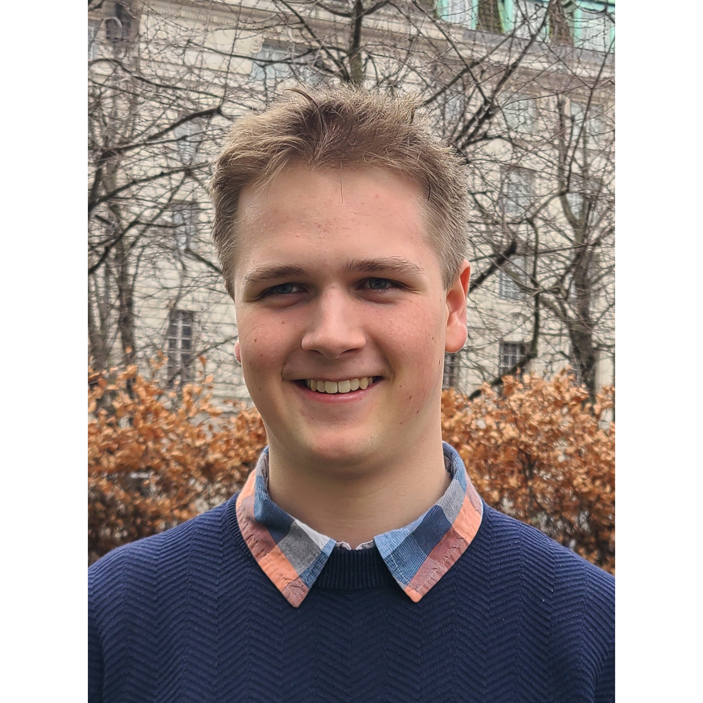
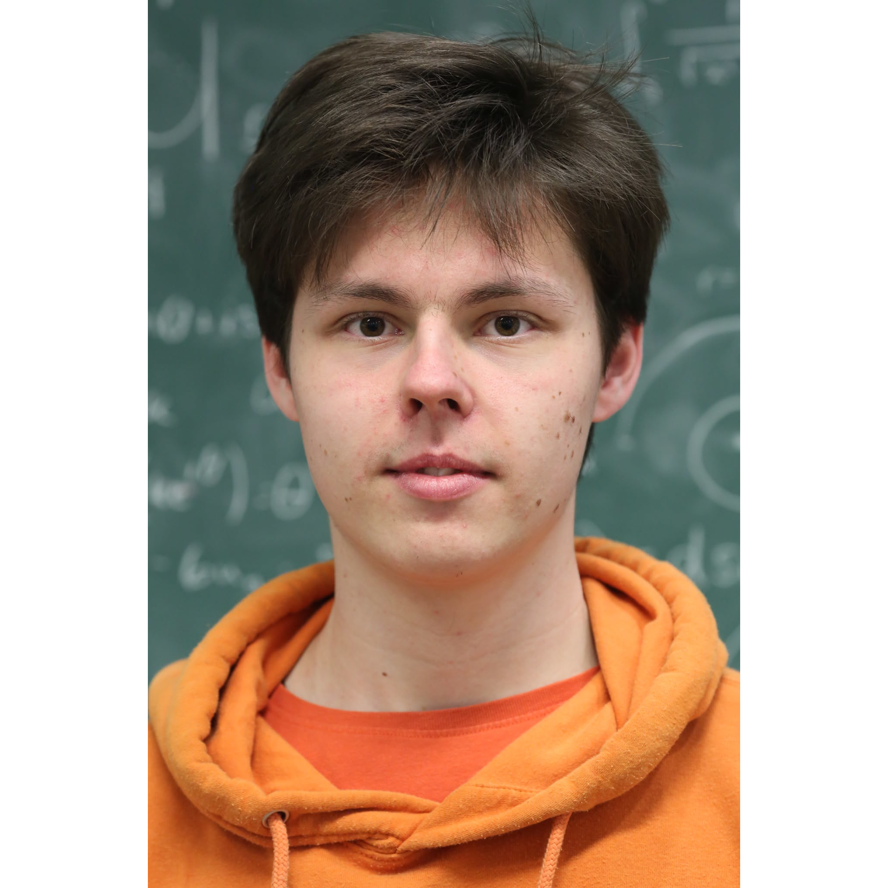
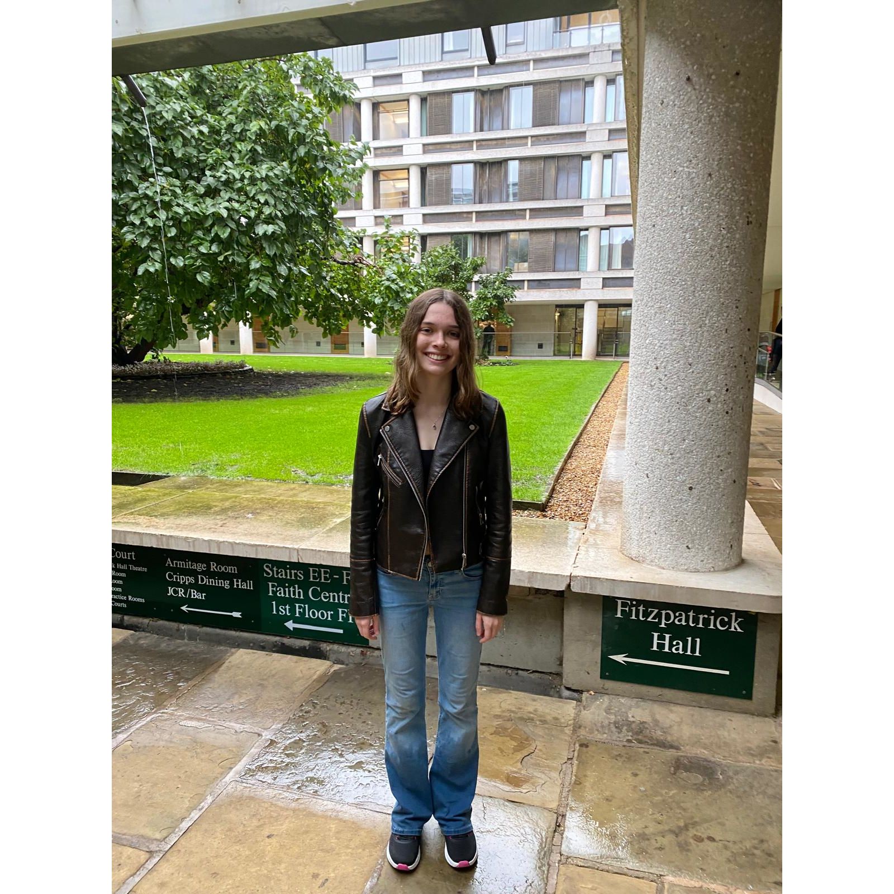
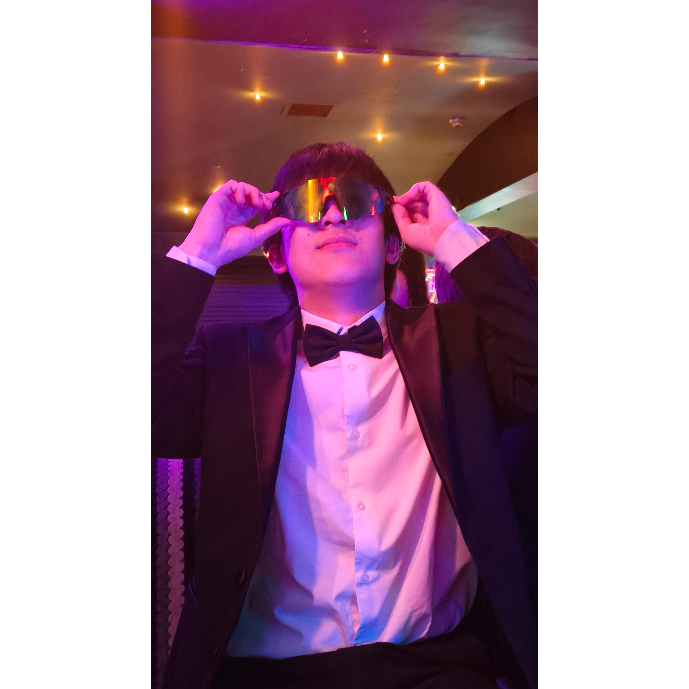
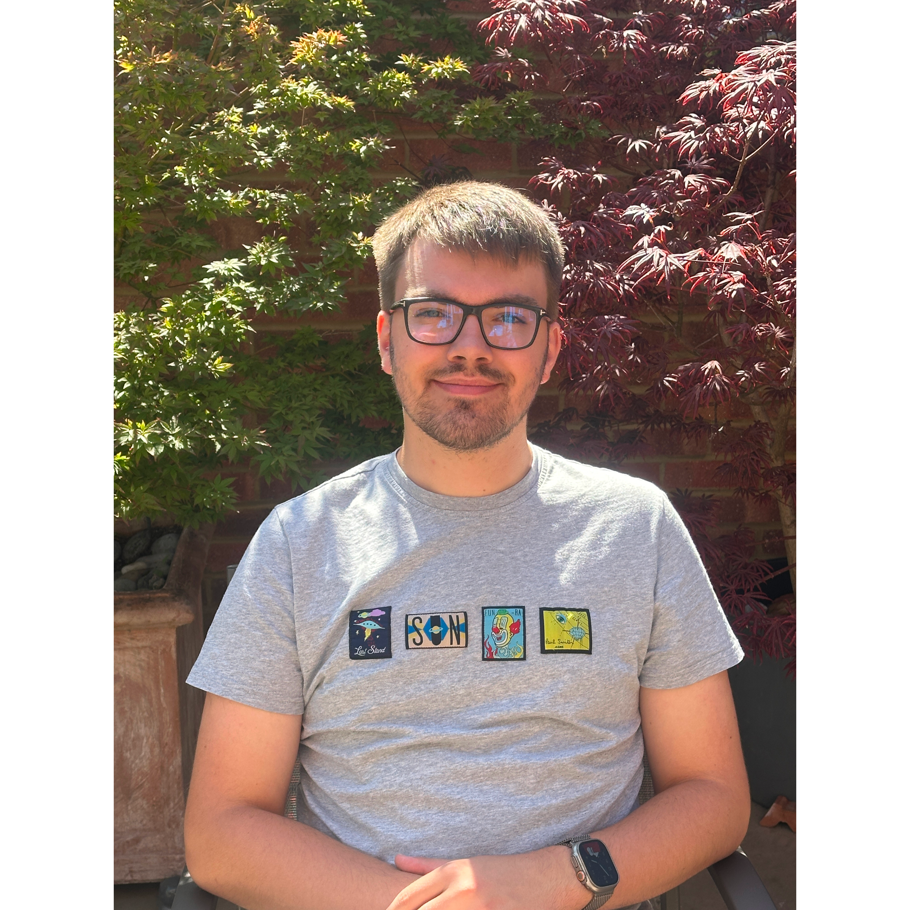
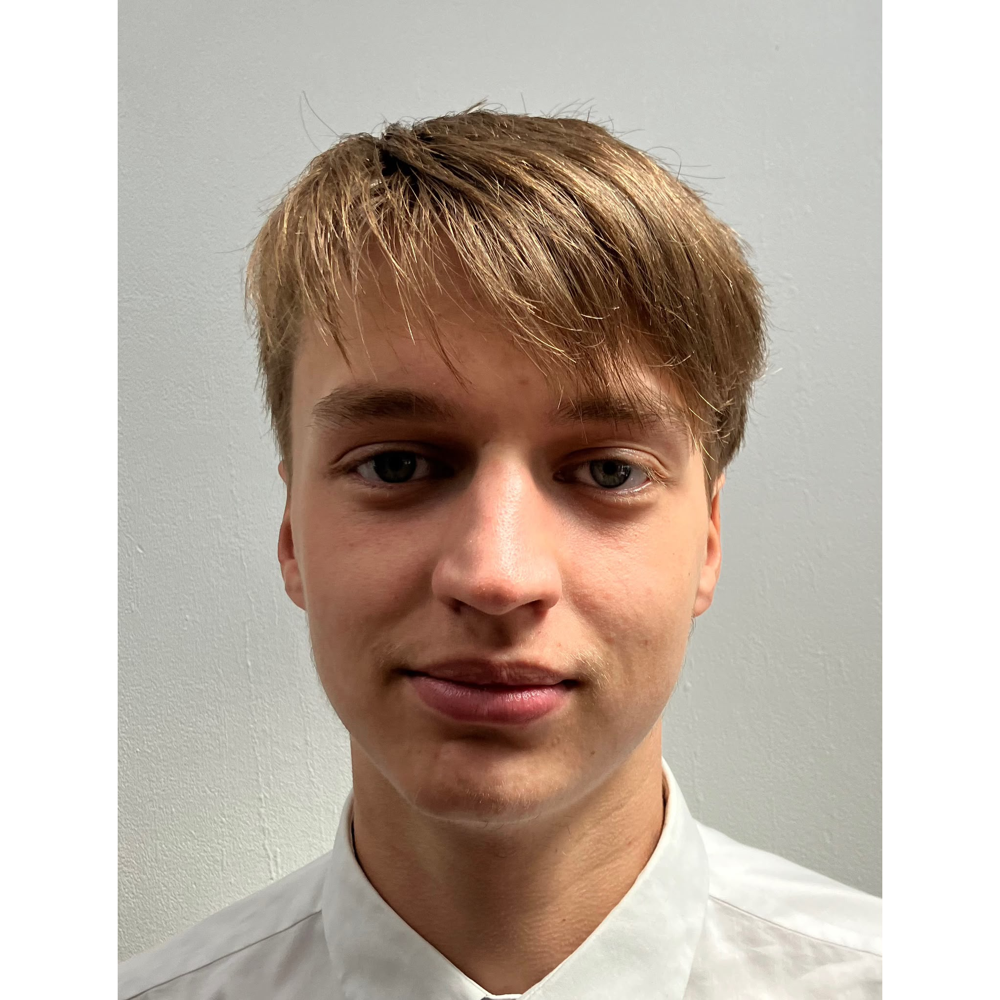

Goals for the year:
I will focus on professionality of the society and making
sure we organise our events further in advance so they can
be more enjoyable. I will also continue our goal from last
year of getting more prestigious speakers.

Goals for the year:
As vice president, I will work to introduce more structure to
the weekly talks/events of the society (be these student-organised
or from academics). Also free matcha (subject to availability/interest)!
Goals for the year:

Goals for the year:
I plan to create more documentation to make the handover process easier
(as currently there is very little information, and is entirely
based on what the previous treasurer chooses to tell you).

Goals for the year:

Goals for the year:
Goals for the year:

Goals for the year:
A member of the Queens' mathematics academic staff who helps in the transition of financial accounts from one committee to another.


Copyright © 2025. Made with love by Ben Balaam, QMS Secretary 2025, with help from the other committee members, partially based on the previous version of the website, designed by Navid Alam, QMS Secretary 2015 and last updated by Erin Keeling, QMS Secretary 2024.